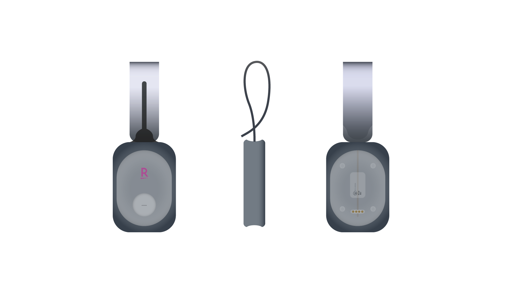
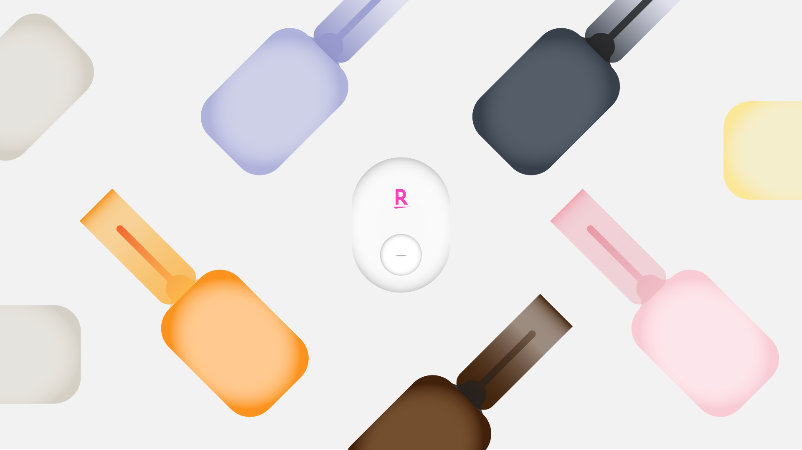
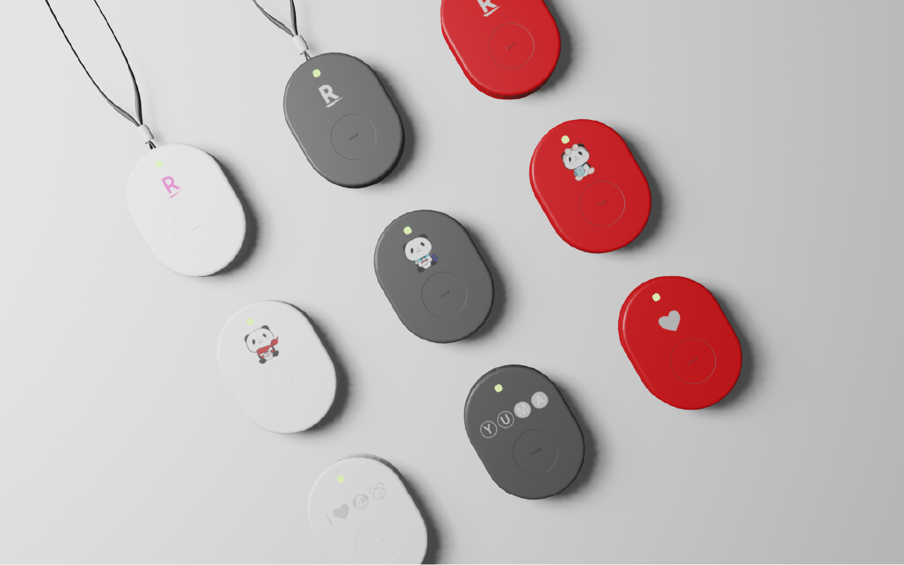
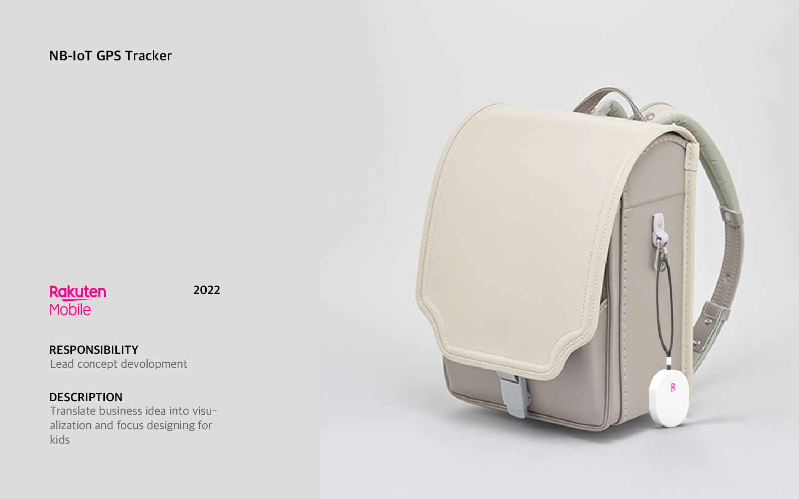

Location GNSS Tracker for Children
- Date: Jan.2022 ~ July.2023
- Project Type: Proof of Concept
Overview
Want to keep your children safe at school, play and everywhere in between. Rakuten GNSS tracker for kids helps the parents peace of mind and ensure the safety with location tracking. It is designed to provide peace of mind for parents and safety for children. Using Global Navigation Satellite System (GNSS) technology, LPWA and Wi-Fi positioning this tracker ensures real-time location tracking, enabling parents to monitor their child's whereabouts with ease.
Key features
- Real-Time Location Tracking
- Geo-Fencing
- SoS Button




© Copyright 2024 SUNG HO LEE